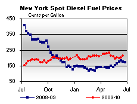

Released on June 23, 2010
(Next Release on June 30, 2010)
First Quarter Producer Earnings Increase
While Refining Remains Weak
During the first quarter of 2010 (Q110), earnings of oil and natural gas producers increased significantly above the levels seen a year earlier, when oil prices were at their low point for the last several years. However, earnings of refiner/marketers and oil field companies (oil field companies provide drilling and other services to producers) fell sharply in Q110 compared to year earlier levels. These results are drawn from quarterly EIA reporting on the financial performance of energy companies (see the (see the Financial News for Major Energy Companies, First Quarter 2010 and the Financial News for Independent Energy Companies, First Quarter 2010) that together represent about half of U.S. oil and natural gas production and nearly two-thirds of U.S. refining capacity.
Based on data available at the time of the publication of the quarterly reports, crude oil prices paid by U.S. refiners averaged $75.28 per barrel in Q110, 85 percent above the average of $40.66 per barrel for the first quarter of 2009 (Q109). (All prices and price changes in this report are denoted in constant Q110 dollars.) Natural gas wellhead prices averaged $4.79 per thousand cubic feet (Mcf) in Q110, compared to the average of $4.38/Mcf in Q109.

The large integrated and large independent producers in EIA’s Financial Reporting System survey reported earnings of $22.2 billion in Q110 for the oil and natural gas production segment, up from losses of $1.6 billion in Q109 (Figure 1), and 23 percent above the first-quarter average for 2005-2009. Smaller independent producers included in the EIA survey reported earnings of $1.2 billion, the highest first quarter earnings over the last 6 years, rebounding from losses of $3.3 billion in Q109. Reported increases in net income of the majors and independent producers reflected higher crude oil and natural gas prices along with increased worldwide oil and natural gas production levels.
In the refining and marketing segment, which includes the operations of large integrated and large independent refiners, earnings dropped to -$0.3 billion in Q110 from $3.5 billion in Q109 (Figure 1). Specifically, domestic refining/marketing operations lost $0.5 billion in Q110 while foreign operations earnings dropped to $0.2 billion, as refining margins generally declined.
The majors’ upstream capital expenditures in Q110 declined relative to Q109 (Figure 2) but still were higher than the first quarter average for 2005-2009. In particular, worldwide oil and gas production capital expenditures fell 14 percent relative to Q109, but increased 3 percent relative to the first quarter average for 2005-2009. For the last 6 quarters (Q408-Q110), worldwide refining/marketing net income has averaged about 86 percent below the pertinent 5-year historical average for that quarter, reducing the incentive for refining/marketing investment by the majors. While the $1.1 billion decline in investment was much smaller than the $3.8 billion decline in net income (Q110 relative to Q109), worldwide refining/marketing investment in Q110 was 22 percent lower than the first quarter average for 2005-2009.
Despite reduced capital expenditures, companies included in the survey reported that their worldwide oil and natural gas production in Q110 exceeded both the Q109 level and the average first-quarter production level over the last 5 years. Production increases reflected the lagged effects of earlier capital expenditures as well as the economic recovery and higher prices.
Net income of selected oil field companies dropped 29 percent from Q109, to $2.5 billion (Figure 3) and by 30 percent relative to the first quarter average over 2005-2009. Rig counts were nearly unchanged compared to Q109 as the increase in oil rigs was almost exactly offset by the decline in natural gas rigs. Day rates for rigs, however, declined substantially in Q110 compared to Q109 due to lower utilization of drilling rigs. Drilling rig usage has declined as a result of lower oil prices and reduced expectations of future production needs due to the economic downturn.
U.S. Average Gasoline and Diesel Prices On the Rise
For the first time in six weeks, the U.S. average price for regular gasoline increased, moving up four cents to settle at $2.74 per gallon, 5 cents higher than last year. Although prices went up in all regions of the country, the range of change was considerable, from less than a half cent in the Rocky Mountains to seven cents in the Midwest. The average on the East Coast increased three cents to $2.69 per gallon, while the Midwest price jumped seven cents to $2.71 per gallon. Despite an increase of two cents, the average on the Gulf Coast remained the lowest of any region at $2.60 per gallon. Increasing less than a half cent, the average in the Rocky Mountains was essentially unchanged at $2.77 per gallon. The West Coast average climbed four cents to $3.03 per gallon, while the price in California moved up nearly a nickel to $3.10 per gallon.
The national average price for diesel fuel rose for the first time since May 10, 2010, climbing three cents to $2.96 per gallon, $0.35 above the price a year ago. With the exception of the Rocky Mountains, prices increased throughout the country. The average on the East Coast increased two and a half cents to $2.97 per gallon and the Gulf Coast went up over three cents to $2.91 per gallon. The average in the Midwest moved up more than four cents to $2.94 per gallon. The Rocky Mountain price dipped a penny to $2.98 per gallon. The West Coast price moved up four cents to $3.09 per gallon and the average in California jumped six cents to $3.13 per gallon.
Propane Inventories Push Higher
Total U.S. propane inventories posted a build of 1.1 million barrels last week to end at 46.2 million barrels, as all regions either remained virtually unchanged or increased. The gain was led by the Midwest, which added 0.7 million barrels, and is the only region to track above the average range for this time of year. The Gulf Coast region received 0.4 million barrels, while the Rocky Mountain/West Coast and the East Coast regions each remained level for the week. Propylene non-fuel use inventories decreased their share of total propane/propylene stocks from 7.1 percent to 6.9 percent.
Text from the previous editions of “This Week In Petroleum” is accessible through a link at the top right-hand corner of this page.
| Retail Prices (Cents Per Gallon) | |||||||
| Retail Data | Changes From | Retail Data | Changes From | ||||
| 06/21/10 | Week | Year | 06/21/10 | Week | Year | ||
| Gasoline | 274.3 | Diesel Fuel | 296.1 | ||||
| Spot Prices (Cents Per Gallon*) | |||||||||||||||||||||||||||||||||||
|  | |||||||||||||||||||||||||||||||||||
|
|||||||||||||||||||||||||||||||||||
| *Note: Crude Oil WTI Price in Dollars per Barrel. | |||||||||||||||||||||||||||||||||||
| Stocks (Million Barrels) | |||||||
| Stocks Data | Changes From | Stocks Data | Changes From | ||||
| 06/18/10 | Week | Year | 06/18/10 | Week | Year | ||
| Crude Oil | 365.1 | Distillate | 156.9 | ||||
| Gasoline | 217.6 | Propane | 46.224 | ||||